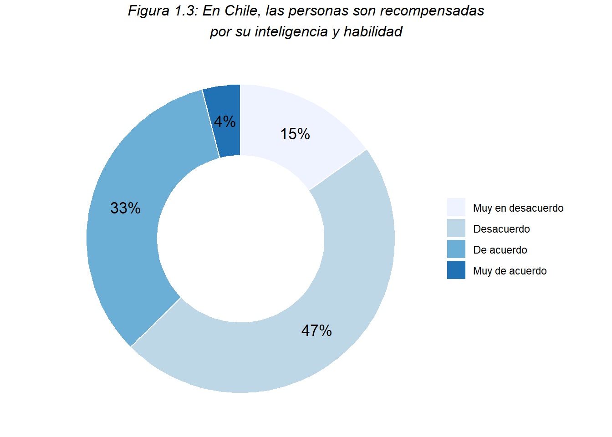
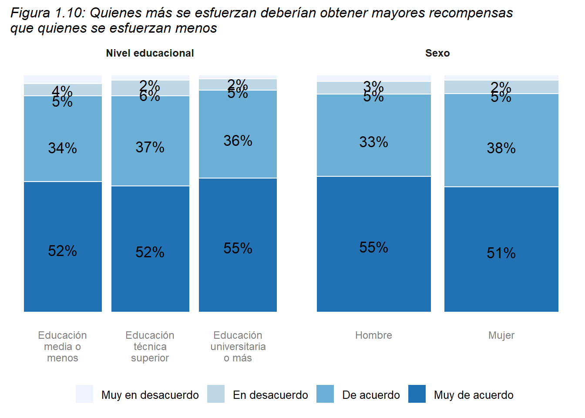
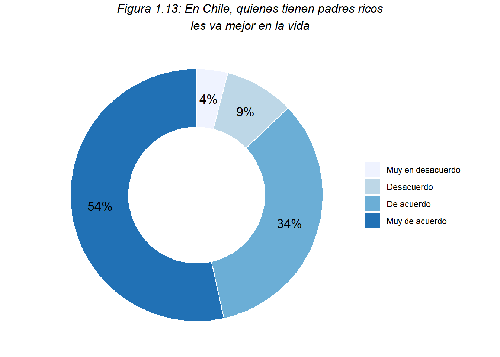
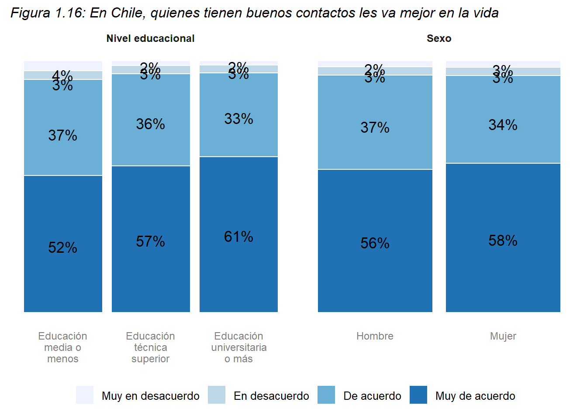
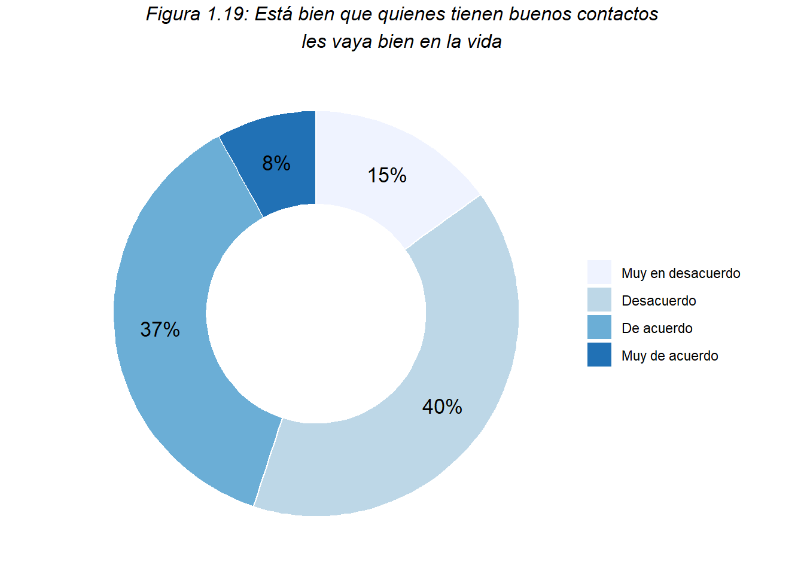

3 Meritocracia
El concepto de meritocracia se originó en la novela distópica The Rise of Meritocracy (1958) del sociólogo Michael Young. En este contexto, la meritocracia se refiere a un sistema de organización social en el que se otorga mayor poder, estatus y prestigio a aquellos individuos que poseen más mérito, definido como una combinación de esfuerzo y talento. Este concepto implica que los bienes y las recompensas se distribuyen de manera proporcional al esfuerzo y al talento de cada individuo, siguiendo el principio distributivo de justicia por equidad o igualdad proporcional. Sin embargo, los críticos argumentan que la meritocracia no siempre cumple con su propósito inicial y, en la práctica, se utiliza para ocultar y legitimar desigualdades y privilegios que no están necesariamente vinculados al esfuerzo o al talento.
Para poder investigar la meritocracia vamos a establecer dos distinciones principales. La primera es estructurar este módulo en dos apartados: meritocracia en la sociedad y Factores no meritocráticos. Dentro de cada una de estas secciones se observará la meritocracia a través de las creencias de las/los personas. La segunda distinción ocurre al interior de dichas creencias, donde es posible distinguir dos tipos: Percepciones, donde nos referimos a cómo las personas visualizacn en la sociedad el cumplimiento de los principios meritocráticos (lo que es) y preferencias, que refieren al apoyo a ideales normativos (lo que debería ser).
Esta sección se dividirá en dos grandes creencias: percepciones y preferencias. Al interior de cada una, se describirán preguntas del cuestionario que hacen alusión a criterios de mérito individual.
3.1 Percepciones de meritocracia
3.1.1 Esfuerzo en la sociedad chilena
Las personas están en desacuerdo (Desacuerdo + Muy en desacuerdo) con que en Chile las personas son recompensadas por sus esfuerzos (72%).
Cruces con características sociodemográficas

Al analizar la influencia del nivel educacional no se ven diferencias notorias, excepto por un leve aumento en el grado de acuerdo con que en Chile las personas son recompensadas por sus esfuerzos entre quienes tienen educación universitaria o más.
De la misma forma, también es notorio un aumento en el grado de desacuerdo entre las mujeres (72%) en comparación con los hombres (65%).
3.1.2 Talento en la sociedad chilena

Las personas están en su mayoría en desacuerdo (Desacuerdo + Muy en desacuerdo) con que en Chile las personas son recompensadas por sus talentos, aunque en menor medida que en relación con el esfuerzo (62% en talento vs 72% en esfuerzo). Por lo tanto, las personas considerarían que, en Chile, el talento es más recompensado que el esfuerzo.
Cruces con características sociodemográficas

Al analizar la influencia del nivel educacional nuevamente no se ven diferencias notorias, excepto por un leve aumento en el grado de desacuerdo con que en Chile las personas son recompensadas por sus talentos entre quienes tienen educación universitaria o más y quienes tienen educación técnica superior.
De la misma forma, también es notorio un mayor grado de desacuerdo entre las mujeres (62%) en comparación con los hombres (57%).
3.1.3 Merecimiento en la sociedad chilena:

Al analizar este gráfico es mucho más notorio que en las variables anteriores que las personas están en desacuerdo (Desacuerdo + Muy en desacuerdo) con que en Chile las personas obtienen lo que merecen (85%).
Cruces características sociodemográficas de estudiantes

Estas diferencias son transversales a los tres niveles educacionales analizados, pero en mujeres el grado de desacuerdo (84%) es mayor que en los hombres (77%).
3.1.4 Oportunidades en la sociedad chilena:

Siguiendo la tendencia del gráfico anterior, las personas están en su mayoría en desacuerdo (Desacuerdo + Muy en desacuerdo) con que en Chile todas las personas tienen las mismas oportunidades para salir adelante (84%).
Cruces con características sociodemográficas

Al analizar las diferencias por nivel educacional, existe un pequeño aumento en el grado de desacuerdo. Sin embargo, es mucho más notorio el grado de desacuerdo de las mujeres (86%) en comparación con los hombres (78%).
3.2 Preferencias
3.2.1 Esfuerzo en la sociedad chilena:

A diferencia de los gráficos anteriores, este gráfico muestra el cómo las personas creen que debería ser la distribución de recompensas. En este caso, la gran mayoría de las personas están de acuerdo (De acuerdo + Muy de acuerdo) con que quienes más se esfuerzan deberían obtener mayores recompensas (92%).
Cruces con características sociodemográficas

Al analizar las diferencias por nivel educacional, quienes tienen nivel educacional universitario o más prefieren aún más que quienes se esfuerzan reciban mayores recompensas que las personas con educación técnica superior o educación media o menos. Así mismo, los hombres también están en mayor medida Muy de acuerdo con que quienes se esfuerzan obtengan mayores recompensas en comparación con las mujeres.
3.2.2 Talento en la sociedad chilena:

A diferencia de lo que pasa con el esfuerzo, al analizar el talento no es tan notorio el consenso con que quienes poseen más talento deberían obtener mayores recompensas, aunque de todas formas es mayor la cantidad de personas que están de acuerdo o muy de acuerdo (73%)
Cruces con características sociodemográficas

Al analizar el nivel educacional, existe una clara tendencia a que las personas con mayor nivel educacional prefieren en mayor medida que quienes poseen más talento reciban mayores recompensas (por ejemplo, 71% de las personas con educación universitaria en comparación con 64% entre quienes tienen educación media o menos). De la misma forma, los hombres (74%) prefieren en mayor medida que las mujeres (62%) que quienes tienen más talento reciban mayores recompensas que quienes poseen más talento.
4 Factores no meritocráticos
Estos factores aluden a externalidades del mérito individual como la herencia, los contactos y la suerte. Por ello, se presentan preguntas referidas a la percepción respecto a los logros individuales de las personas que tienen padres ricos y buenos contactos.
4.1 Percepciones no meritocráticas
4.1.1 Padres ricos en la sociedad chilena:

En general, las personas están de acuerdo o muy de acuerdo (88%) con que en Chile quienes tienen padres ricos les va mejor en la vida.
Cruces con características sociodemográficas

Esta percepción es transveral a todos los niveles educacionales analizados y tampoco se observan diferencias notorias entre hombres y mujeres.
4.1.2 Buenos contactos y logro individual en la sociedad chilena:

Siguiendo la tendencia anterior, las personas también están de acuerdo o muy de acuerdo (94%) con que quienes tienen buenos contactos les va mejor en la vida.
Cruce con características sociodemográficas

Al analizar el nivel educacional de los encuestados, se observa que las personas con educación universitaria o más están en mayor medida muy de acuerdo (61%) que las personas con menos nivel educacional con que quienes tienen buenos contactos les va mejor en la vida. Sin embargo, no se observan diferencias notorias entre hombres y mujeres.
4.2 Preferencias no meritocráticas
Estos factores aluden a externalidades del mérito individual como la herencia, los contactos y la suerte. Por ello, se presentan preguntas referidas a la preferencia respecto a los logros individuales de las personas que tienen padres ricos, buenos contactos.
4.2.1 Padres ricos

Al preguntarle a los encuestados sobre si está bien que quienes tienen padres ricos les vaya mejor en la vida, no existe un consenso entre los participantes ya que un 50% está de acuerdo o muy de acuerdo y el otro 50% está en desacuerdo o muy en desacuerdo. De todas formas, si analizamos las dos categorías extremas, es mayor el grado que está muy en desacuerdo (15%) que los que están muy de acuerdo (7%).
Cruces con características sociodemográficas

En este gráfico no se observan diferencias notorias según nivel educacional, pero sí se puede observar un menor grado de acuerdo en mujeres que en los hombres con que está bien que las personas con padres ricos les vaya mejor en la vida (42% en las mujeres en comparación con el 48% de los hombres)
4.2.2 Buenos contactos

Siguiendo con las preferencias no meritocráticas, al analizar si está bien que las personas con buenos contactos les vaya mejor en la vida la tendencia es similar, aunque es mayor la cantidad de personas que están muy en desacuerdo o desacuerdo (55%) que los que están de acuerdo o muy de acuerdo.
Cruces con características sociodemográficas

Esta tendencia es transveral a todos los niveles educacionales, y existe una pequeña diferencia entre hombres y mujeres. El grado de desacuerdo o muy en desacuerdo es mayor entre las mujeres (53%) que en los hombres (49%).